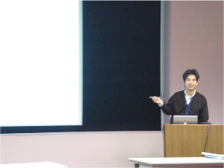
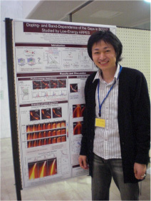
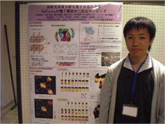
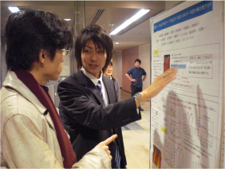

PF研究会「高分解能角度分解光電子分光研究と将来展望」
2008年12月17日 (水) - 18日(木) 、高エネルギー加速器研究機構において「高分解能角度分解光電子分光研究と将来展望」をテーマにPF研究会が開催された。本研究室からは、井野助教、安斎、中島、原が参加しARPES研究の最前線について講演・ポスター発表を行った。
参考URL : PF研究会

井野明洋 助教 「HiSOR における高温超伝導物質の低エネルギー励起角度分解光電子分光」

安斎太陽 「低エネルギー角度分解光電子分光によるBi2212のギャップの
ホール濃度依存性とバンド依存性」

中島陽祐 「放射光角度分解光電子分光による BaFe2As2 の電子構造の三次元マッピング」

原豪太郎 「最適ドープおよび不足ドープBi2201の低エネルギー角度分解光電子分光」